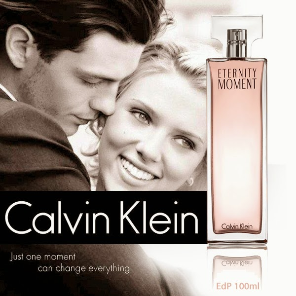

CANCIONERO |
|
Lista de Canciones |
NO ME PLATIQUES MAS
No me platiques más Lo que debió pasar Antes de conocernos Sé que has tenido, horas felices Aun sin estar conmigo No quiero ya saber Que pudo suceder En todos estos años Que tú has vivido con otras gentes Lejos de mi cariño Te quiero tanto que me encelo Hasta de lo que pudo ser Y me figuro que por eso Es que yo vivo, tan intranquilo No me platiques ya Déjame imaginar Que no existe el pasado ç Y que nacimos, el mismo instante En que nos conocimos Te quiero tanto que me encelo Hasta de lo que pudo ser Y me figuro que por eso Es que yo vivo, tan intranquilo No me platiques ya Déjame imaginar Que no existe el pasado Y que nacimos, el mismo instante En que nos conocimos |